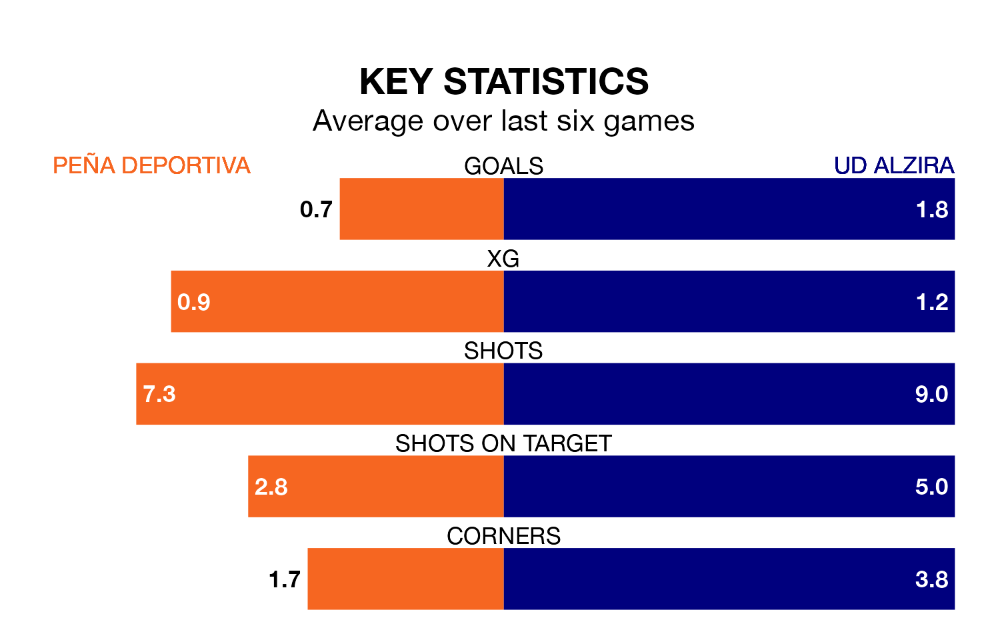

UD Alzira visit Peña Deportiva at Campo Municipal del Santa Eulalia del Río on early Sunday on the back of three consecutive wins in Segunda División RFEF Group 3.
Alzira have picked up 14 points from their last six games, and they face a Peña Deportiva side who lost their last match, and have collected four points from the last possible 18.
With 21 goals in 17 games so far this season, Peña Deportiva are scoring at the league's average rate with 1.2 goals per game. And they are conceding more than average, letting in 31 goals at a rate of 1.8 per game.
Alzira are also average scorers, with 1.2 goals per game. They have conceded 1.1 goals per game.
The away side are sixth in the table after 17 games, of which they have won six and drawn seven, earning 25 points.
The hosts are six places behind Alzira in 12th, with five wins and six draws putting them on 21 points.
Peña Deportiva's last match was on January 7, a 1-0 loss against Terrassa.
Alzira beat Manresa 1-0 last time out, also on January 7, with on the scoresheet.
Updated: 11:31, 09/01/24